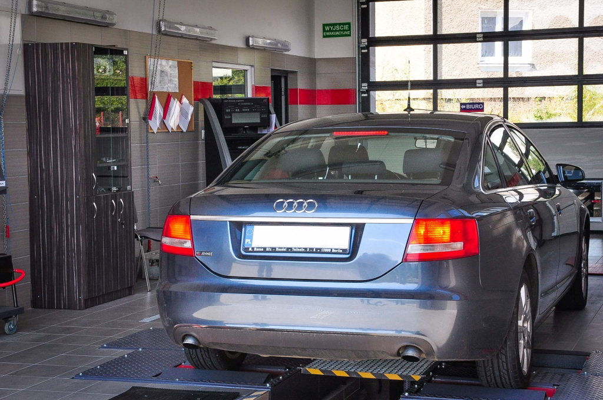
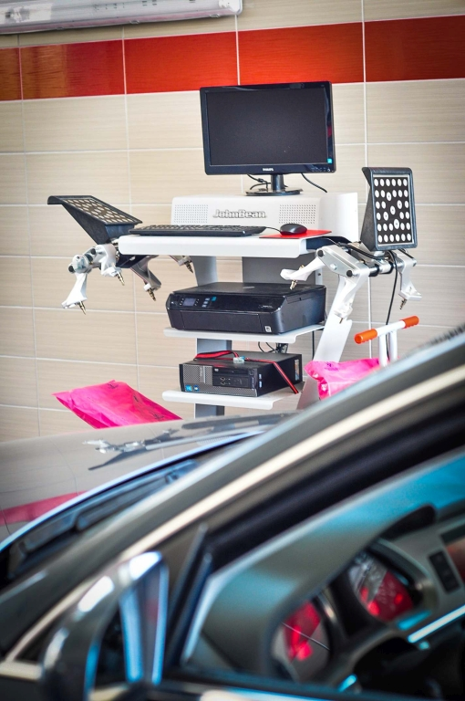
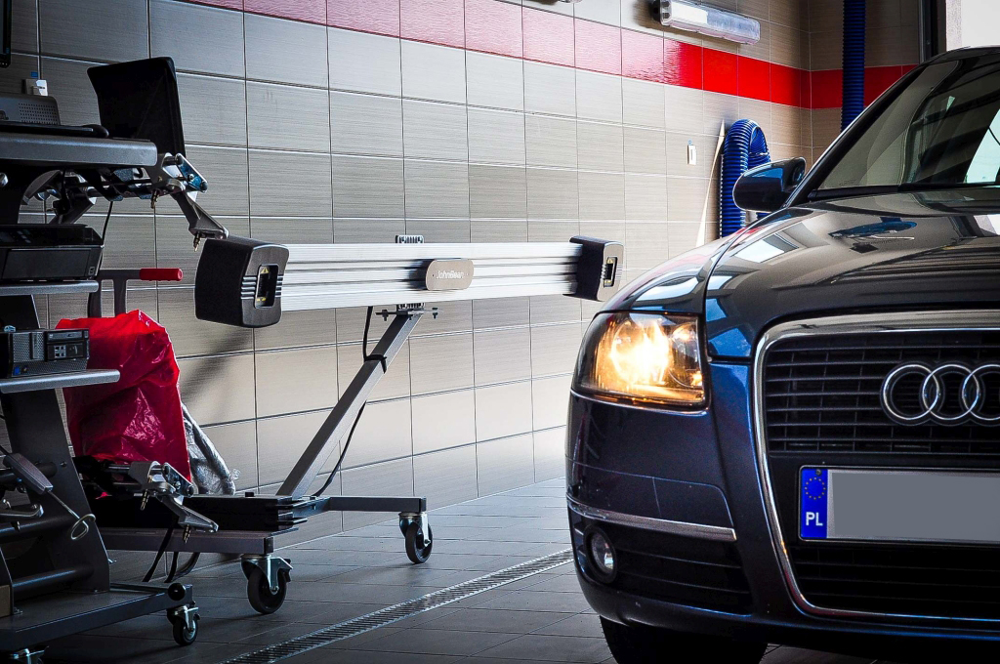
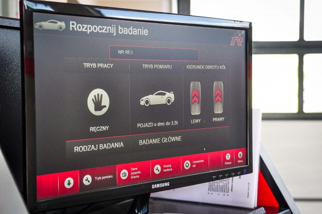
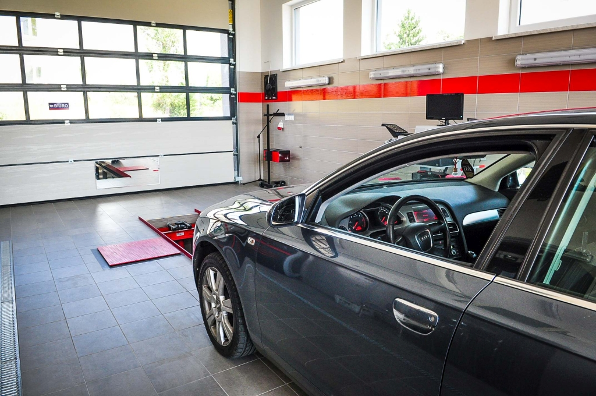

Galeria
Zobacz nasze nowoczesne wyposażenie i profesjonalne stanowiska diagnostyczne. Kliknij na zdjęcie, aby je powiększyć.






Nasze wyposażenie
Dysponujemy najnowocześniejszym sprzętem diagnostycznym, który pozwala nam na przeprowadzenie kompleksowego badania technicznego Twojego pojazdu:
- 🔧 Linie diagnostyczne najnowszej generacji
- 🛑 Profesjonalne testery hamulców
- 💨 Urządzenia do pomiaru emisji spalin
- 🔨 Testery zawieszenia
- 💡 Nowoczesne urządzenia do regulacji świateł
- 📊 Komputerowe systemy diagnostyczne
✨ Dlaczego warto nas wybrać?
⚡
Szybka obsługa
Minimalny czas oczekiwania
✅
Certyfikaty
Pełna dokumentacja
👨🔧
Doświadczenie
Wykwalifikowani diagności
🎁
Bonusy
Gratisy dla każdego